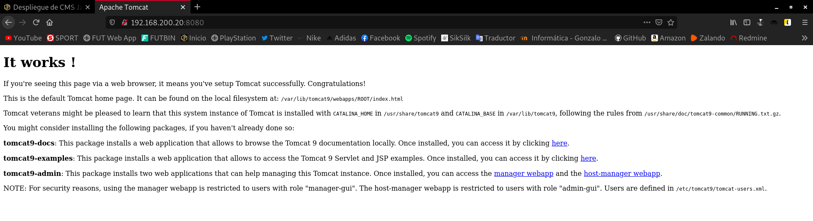

En esta práctica vamos a desplegar un CMS escrito en Java. Puedes escoger la aplicación que vas a desplegar de CMS escritos en Java o de Aplicaciones Java en Bitnami.
Indica la aplicación escogida y su funcionalidad
He decidido escoger el CMS escrito en Java, llamado Guacamole.
Apache Guacamole es una herramienta libre que nos permite conectarnos remotamente a un servidor mediante el navegador web sin necesidad de usar un cliente.
Gracias a HTML5, una vez tengamos instalado y configurado Apache Guacamole, tan solo tenemos que conectarnos mediante el navegador web para empezar a trabajar remotamente.
Escribe una guía de los pasos fundamentales para realizar la instalación
-
Instalar tomcat 9.
-
Comprobar el acceso al puerto 8080.
-
Buscar un archivo
.wary almacenarlo en la ruta/var/lib/tomcat9/webapp. -
Acceder a la aplicación.
-
Configurar el fichero
/etc/tomcat9/server.xmlpara activar el conectorajp. -
Buscar información sobre el proxy.ajp en Apache2 y realizar la configuración necesaria.
A continuación vamos a realizar la instalación de tomcat 9 y de la aplicación en sí.
Antes de nada, necesitaremos un equipo donde trabajar. Yo voy a instalar una máquina virtual, y para ello, voy a utilizar Vagrant. He creado este Vagrantfile:
# -*- mode: ruby -*-
# vi: set ft=ruby :
Vagrant.configure("2") do |config|
config.vm.box = "debian/buster64"
config.vm.network "private_network", ip: "192.168.200.20"
end
Una vez estamos en nuestro equipo de trabajo, en primer lugar, debemos instalar Tomcat, en mi caso, voy a instalar la versión 9
Tomcat requiere que Java esté instalado en el servidor para poder ejecutar cualquier código de aplicación web Java.
apt install default-jdk -y
Instalado Java, ya podemos proceder a instalar Tomcat. Para ello:
apt install tomcat9 -y
Para comprobar el funcionamiento de una forma más visual, podemos conectarnos desde un navegador web mediante la dirección IP de la máquina especificando el puerto 8080:

Vemos que está funcionando correctamente.
Ahora vamos a comenzar la instalación de Apache Guacamole, para ello vamos a instalar los paquetes mínimos necesarios:
apt install build-essential gcc libcairo2-dev libjpeg62-turbo-dev libpng-dev libtool-bin libossp-uuid-dev -y
Acabo de comentar que iba a instalar los paquetes necesarios. Esto es porque en función de los protocolos que queramos utilizar, vamos a instalar una serie de paquetes u otros (podemos instalarlos todos y trabajarán de manera conjunta sin problemas).
En mi caso, voy a instalar los paquetes necesarios para el soporte de SSH:
apt install libpango1.0-dev libssh2-1-dev -y
Como vamos a utilizar SSH, también nos es necesario el soporte de OpenSSL.
Aquí dejo también los paquetes a instalar para cada protocolo, por si estás interesado en instalarlos:
- Soporte para OpenSSL:
apt install libssl-dev -y
- Soporte para RDP:
apt install libfreerdp-dev -y
- Soporte para telnet:
apt install libpango1.0-dev libtelnet-dev -y
- Soporte para Guacenc:
apt install libavcodec-dev libavutil-dev libswscale-dev -y
- Soporte para VNC y audio:
apt install libvncserver-dev libpulse-dev -y
- Soporte para Ogg Vorbis:
apt install libvorbis-dev -y
- Soporte para WebP:
apt install libwebp-dev -y
Ahora nos vamos a descargar el paquete correspondiente al servidor:
wget http://archive.apache.org/dist/guacamole/0.9.14/source/guacamole-server-0.9.14.tar.gz
Lo descomprimimos:
tar -xzf guacamole-server-0.9.14.tar.gz
Dentro del directorio /guacamole-server-0.9.14, ejecutamos el configurador automático. Si nos da algún error, será señal de que nos faltan algunas librerías necesarias:
./configure --with-init-dir=/etc/init.d
Cuando termina el proceso, y observamos que todo ha ido según lo previsto, es el momento de compilar:
make
Una vez terminada la compilación, ya podemos instalar guacamole-server:
make install
Una vez terminada la instalación, actualizamos las librerías instaladas en el sistema:
ldconfig
En este punto, ya podemos descargar el fichero .war.
¿Alguien se pregunta qué es un fichero .war?
Un fichero .war es una aplicación web que permite a Tomcat acceder a su utilización. El fichero .war tiene que ser descomprimido para ser leído.
¿Has necesitado instalar alguna librería? ¿Has necesitado instalar un conector de una base de datos?
.
Entrega una captura de pantalla donde se vea la aplicación funcionando
.
Realiza la configuración necesaria en Apache2 y tomcat (utilizando el protocolo AJP) para que la aplicación sea servida por el servidor web
.
Entrega una captura de pantalla donde se vea la aplicación funcionando servida por Apache2
.